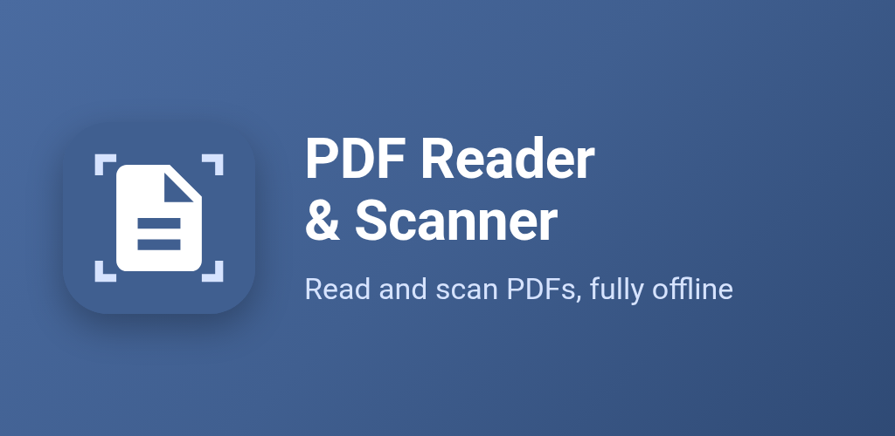
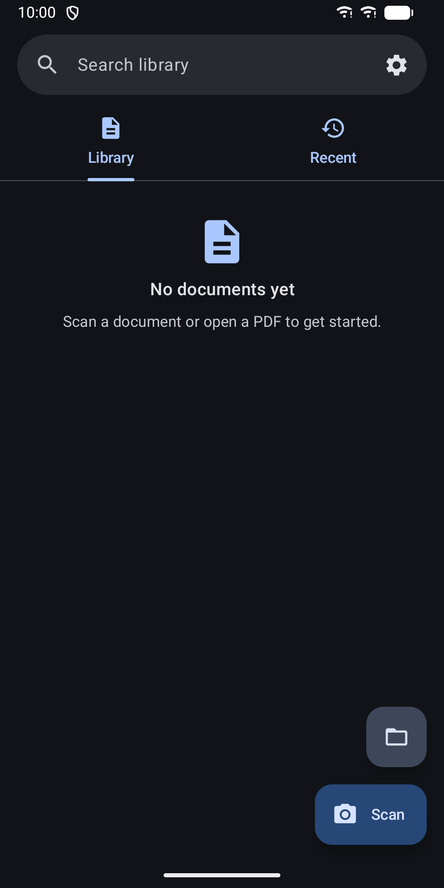
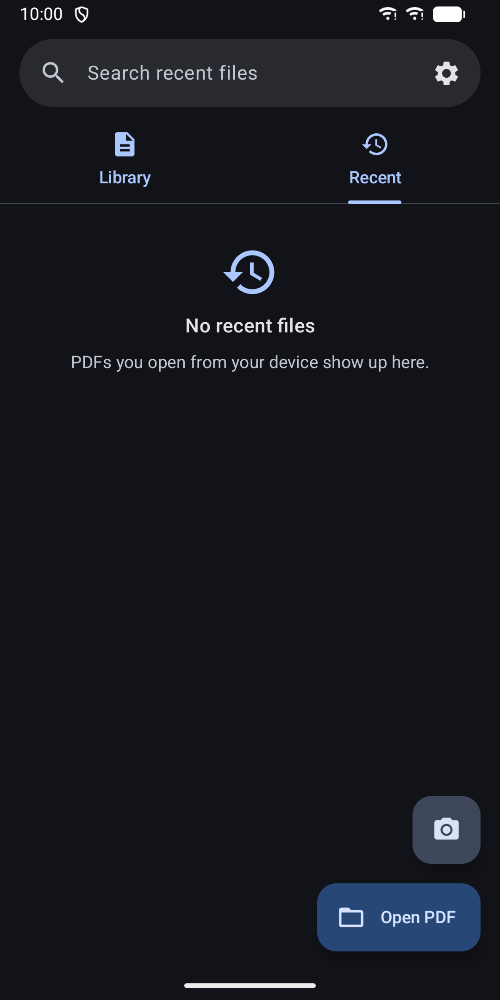
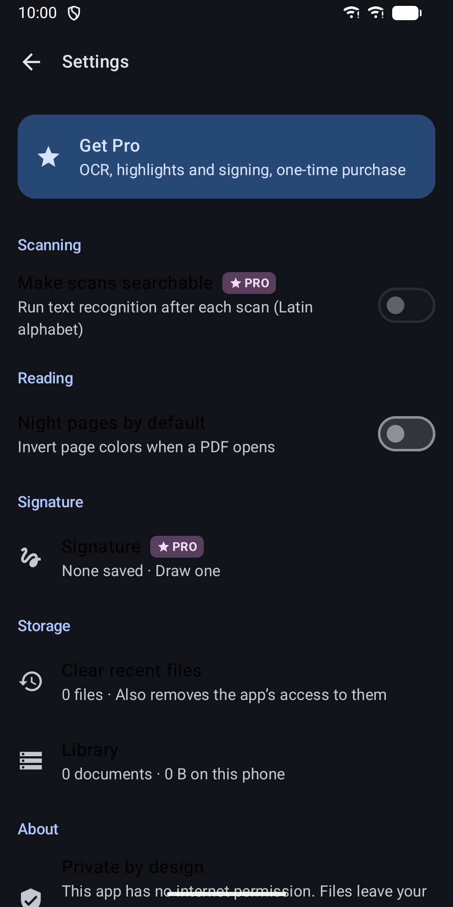
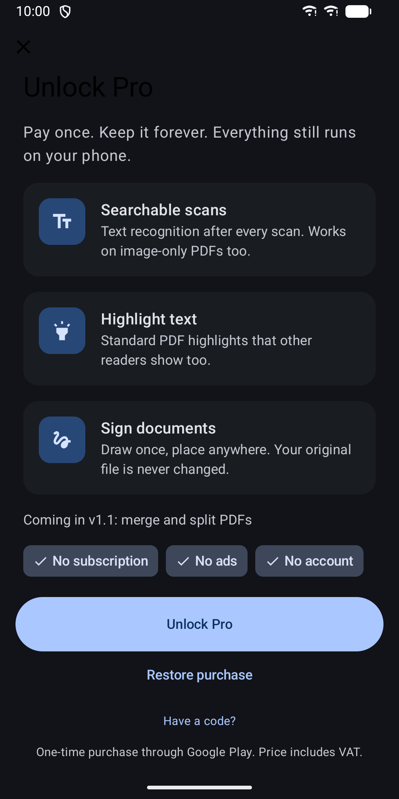

PDF Reader & Scanner: Offline
Read, search and scan PDFs fully offline. No ads, no internet permission.





About
A fast, private PDF reader and document scanner. It works without a connection, shows no ads and has no internet permission, so your files never leave your phone unless you share or export them. READ PDFS • Open PDFs from your phone, cloud apps or "Open with". No access to all your files needed. • Smooth vertical scrolling at full width, on phones and tablets. • Picks up at the page where you stopped. • Table of contents for PDFs that have one. • Search text in PDFs that already have a text layer. • Night pages: invert page colours for reading in the dark. The app itself follows your light or dark system setting. • Password-protected PDFs on Android 15 and newer. • Recent files list that you can clear at any time. SCAN DOCUMENTS • Edge detection and cropping with the Google ML Kit document scanner. • Unlimited scans, no watermark. • Scans are saved as PDF in a private library on your phone. • Search, sort and rename your scans, with page thumbnails. • Add and delete pages of a saved scan. • Export to any folder or share as PDF. PRO: ONE-TIME PURCHASE • Searchable scans: text recognition runs on your phone after every scan, and works on image-only PDFs too. • Highlight text with standard PDF highlights that other readers show. • Sign documents with a drawn signature. Your signature is encrypted with a key that never leaves the phone. • Edits are saved as a copy in your library. Your original file is never changed. • No subscription, no trial, no account. PRIVATE BY DESIGN • No internet permission. Nothing is uploaded, nothing is tracked. • No account, no analytics. • The library is excluded from backups. • No ads. HOME SCREEN WIDGET Your last three scans or opened PDFs and a one-tap Scan button. Available in English, German and Spanish. Scanning and Pro need Google Play services. Reading works without them. Text recognition supports the Latin alphabet.